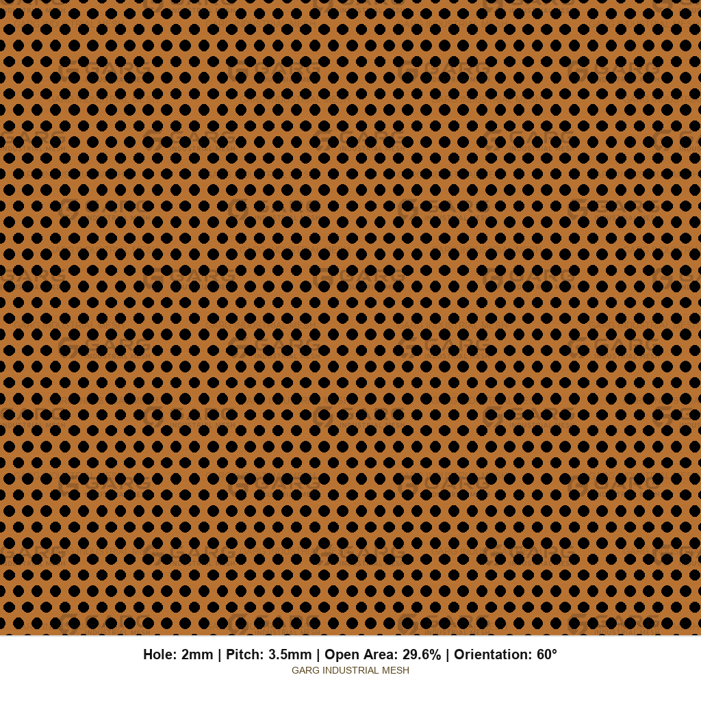

End use
Brass Sheet Uses - Screens, Elevators and Grilles
Same press on our floor. Different jobs. Tell us the end use in one sentence. It changes alloy, temper, thickness, hole size, blank edge, and finish. We quote this every day for architects, elevator OEMs, furniture makers, and AV / lighting buyers.
Thickness bands are shop guidance. Confirm against span, load, hole size, and hole ≥ thickness. Detail: perforated brass sheet thickness guide. Brass is chosen for colour and formability — not as a copper substitute for Faraday / EMI shielding.
Decorative brass screens & architectural cladding
Brass sells itself on warm yellow-gold colour — decorative brass screens, brass architectural cladding, brass panel with holes for facades and interiors. Spec-wise you buy span stiffness, visual density, and a clean margin for the frame. Soft temper for curved wraps. Harder temper for large flat fields. Round 60° is the usual visual default; square 90° and hex 60° for grid or honeycomb reads.
- Thickness guidance: ~0.5–1.5 mm common.
- State pattern direction vs panel long edge.
- Lacquer / oil / bare mill — say it. Fresh brass fingerprints and tarnishes.
- Usually C26000 cartridge brass; red brass or Muntz when colour is named.
Brass elevator panel & cabin interiors
Elevator cabins and lift interiors use perforated brass for durable, premium faces. Flatness and blank edge for framing matter as much as hole pattern. Half-hard temper is a common starting point. Colour lot consistency across a bank of cars matters — write the UNS and approve a sample coupon.
- Thickness guidance: ~0.8–1.5 mm.
- Blank edge sized for return / frame / rivet land.
- Specify lacquer if fingerprints will show under cabin lighting.
Brass speaker grille & lighting faces
Brass speaker grilles and lighting diffuser faces need controlled OA% for sound / light transmission and a clean visual density. Fine holes in thinner sheet are common; still respect hole ≥ thickness. Formed cups need annealed temper.
- Thickness guidance: ~0.5–1.2 mm.
- OA% is geometry — not an acoustic NRC rating by itself.
- Burr side away from cloth / listener face when specified.
Brass ventilation grille & retail displays
Open area drives airflow on a brass ventilation grille. Retail displays and fixtures use perforated brass for branding warmth. Calculate OA% on the perforated field; subtract blank edges from free area if the opening includes them.
Signage, furniture & hardware
Perforated brass plate and brass mesh sheet for letters, backlit signs, table bases, cabinet doors, and hardware faces. Edge quality and finish usually dominate. Send drawings for cutouts and unequal margins.
Marine accents & anti-corrosive decorative work
Where brass is preferred for look (and sometimes named Muntz / red brass), we punch decorative marine accents and exterior hardware faces. This is not a substitute for specifying the right alloy and finish for the exposure. High-zinc yellow brass can be more sensitive to dezincification in aggressive waters — name the environment. Do not order brass primarily for EMI / Faraday duty.
Musical / instrument-related panels
Instrument-related perforated brass (grilles, covers, resonant faces) follows the same geometry rules. Colour and finish matching existing hardware often matters more than peak strength.
Quick map
| Use | Thickness band | Often emphasize | Typical alloy talk |
|---|---|---|---|
| Decorative screen / cladding | ~0.5–1.5 mm | Look, flatness, lacquer | C26000 |
| Elevator / cabin panel | ~0.8–1.5 mm | Flatness, margins, lot colour | C26000 |
| Speaker grille / lighting | ~0.5–1.2 mm | OA%, temper, burr side | C26000 |
| Vent grille / retail display | ~0.5–2.0 mm | OA%, mounting land | C26000 / as drawn |
| Signage / furniture / hardware | ~0.6–2.0 mm | Edge, finish, cutouts | Per drawing |
| Marine decorative accent | ~0.8–2.0 mm | Alloy + finish for exposure | C28000 / C23000 if named |
Patterns matched to common end uses




Ready to write the PO? How to order.